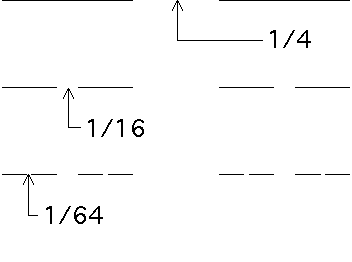

The second fractal fold is based on a variation on this Cantor set: we use the same procedure but vary the sizes of the pieces removed.
|  |
| The lengths of the gaps for the first three stages of a fat Cantor set. |
The sum of the lengths of the removed intervals is
This is a geometric series with first term
Roughly, the process has not removed all the length of the initial segment; more precisely, this Cantor set has positive measure. Yet this set is still uncountable and also contains no intervals.
Cantor's original set was the middle thirds set.
Today any set made by iteratively removing middle portions is called a Cantor set. All are fractals: any subset contains scaled copies of the entire set.
Mandelbrot has given these sets the evocative name fractal dusts.
Positive measure Cator sets are examples of fat fractals.
Mandelbrot conjectures that radial cross-sections of Saturn's rings are fat Cantor sets. For supporting evidence, click each picture for an enlargement in a new window.
| A Voyager picture of Saturn | A (false color) Voyager closer view of Saturn's rings |
Return to Background